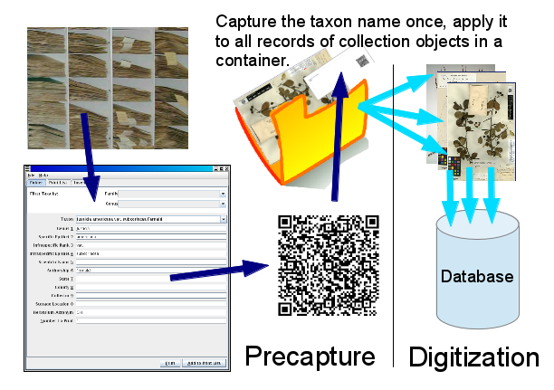
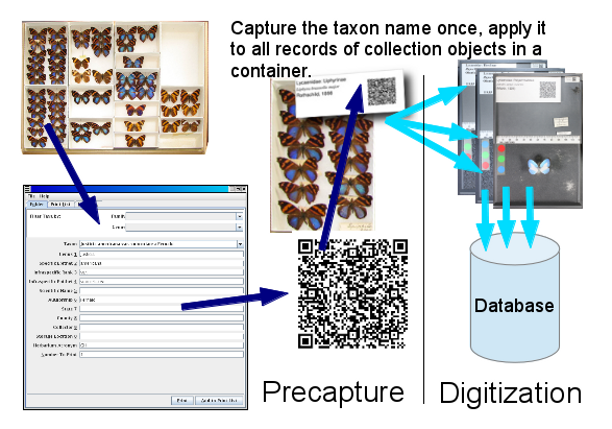

This application is designed to create human and machine readable labels to accompany containers of collection objects (Folders of Herbarium Sheets, Unit Trays of Insects, etc.) into a digitization apparatus where the machine readable information can be extracted at the container level and applied to the digital records of each of the contained collection objects. The purpose of this is to reduce redundant capture of information. For example, all the herbarium sheets in a folder are likely to share a current filed under identification. An initial pre-data-capture pass through the collection can capture this current identification once, print it in machine readable form, and associate that printed information with the folder. Thus, when that folder is brought to a station in a workflow, the machine readable information can be scanned and associated with the image and database record of each specimen in the folder, without the current identification having to be retyped for each sheet. This concept of capturing information from the storage of collection objects prior to data capture and then applying the information to all collection objects from within a given container can be applied within any discipline where multiple collection objects sharing similar information are stored in the same container.
|  |  |